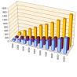
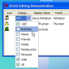
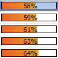
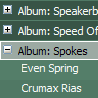
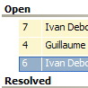
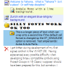

vbAccelerator Explorer Bar Control
vbAccelerator Explorer Bar Control
 vbAccelerator ListView Control
vbAccelerator ListView Control
 vbAccelerator Scroll Buttons Control
vbAccelerator Scroll Buttons Control
 vbAccelerator NeoCaption Component v2.0
vbAccelerator NeoCaption Component v2.0

S Grid 2 Index
 | SGrid 2.0SGrid 2.0 is an updated version of the popular SGrid control which adds drag-drop hierarchical grouping, owner-draw cells and many other features. It has the same highly-optimised display code but is now further enhanced by much better sort, row insert and delete performance. It remains a great alternative to the ListView in report mode and can now be used to create TaskLists and TreeView-style grouped displays. Last Updated: 10 February 2004 |
|  | SGrid 2.0 PerformanceThis article provides some information on how the performance of S-Grid 2.0 is achieved and compares performance relative to the Microsoft Hierarchical FlexGrid and ListView controls. Last Updated: 25 January 2004 |
|  | Using Editable in SGrid 2This article describes how to use the Editable setting in SGrid 2.0, which has been made more flexible and reliable compared to the previous version of the grid. It also provides a couple of handy controls - a drop-down picker which allows you to pick one or more of a selection of items and a popup tip control that works under any OS. Last Updated: 24 January 2004 |
Panel Selector ControlThis article provides a regional selection control which can be floated over other controls to provide additional options for the selected item. The demonstration then shows how to use the control in conjunction with SGrid 2.0 in hot-tracking mode to provide an interface similar to the lists in the TaskPane in Microsoft Office XP. Last Updated: 24 January 2004 | |
|  | Owner-Draw Cells with SGrid 2.0This sample demonstrates implementing the IOwnerDrawGridCell interface for SGrid 2.0 to create customised cells within a grid. Two easy to re-use examples are provided: a colour indicator and a progress bar. Last Updated: 24 January 2004 |
|  | MusicLibrary SGrid SampleThis sample uses SGrid 2.0 along with the MP3 Tags code to load, display and persist a Music Library. It allows library import, sorting, grouping and in the future should be upgraded to include tag editing and play functions. It has been successfully used with over 7,000 tracks. Last Updated: 24 January 2004 |
|  | Creating ListView Style Groups with SGrid 2This sample demonstrates how to use owner-draw to customise the appearance of grouping rows, and to ensure that they remain open in the style of the Windows XP ListView in grouped mode. It also demonstrates adding new rows to a grouped grid and moving them to the correct position given the current sorting and grouping options. Last Updated: 24 January 2004 |
|  | S-Grid 2.0 FeaturesThis article provides a rundown of the new features and updates provided in S-Grid 2.0, and also shows samples of the types of displays that can be set up using the control. Last Updated: 24 January 2004 |